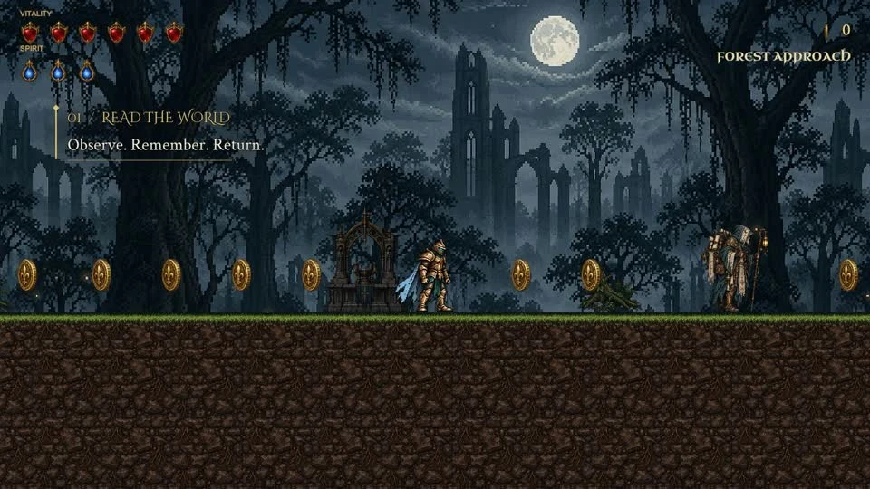

01 / 2D Metroidvania
Babel
Explore a connected tower, earn traversal abilities, and decide when to spend the Spirit that powers both movement and survival.
Unity 6 · C#
Combat systems · Ability-gated levels · Progression
Combat systems · Ability-gated levels · Progression